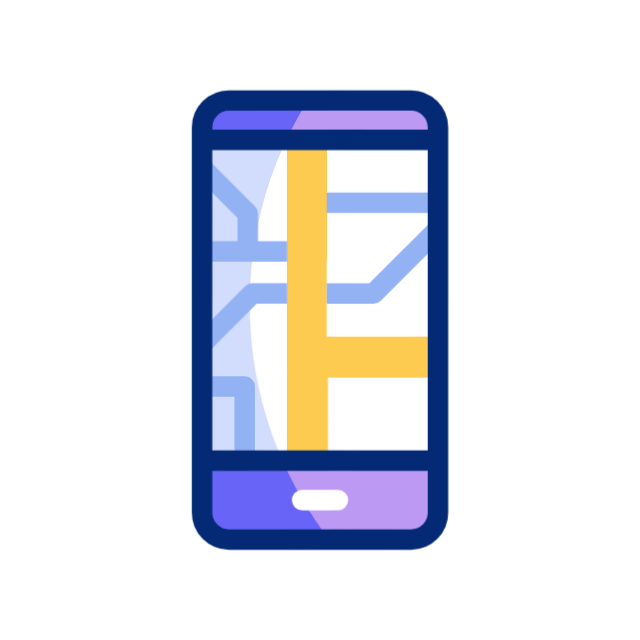

Mi estado V2V
Socket ID:
Username:
Última posición:
Velocidad:
Última actualización:
(visible solo para debug – puedes ocultarlo o mostrarlo con botón)
Toggle Debug

Conectando a V2V...
Obteniendo posición GPS
💬